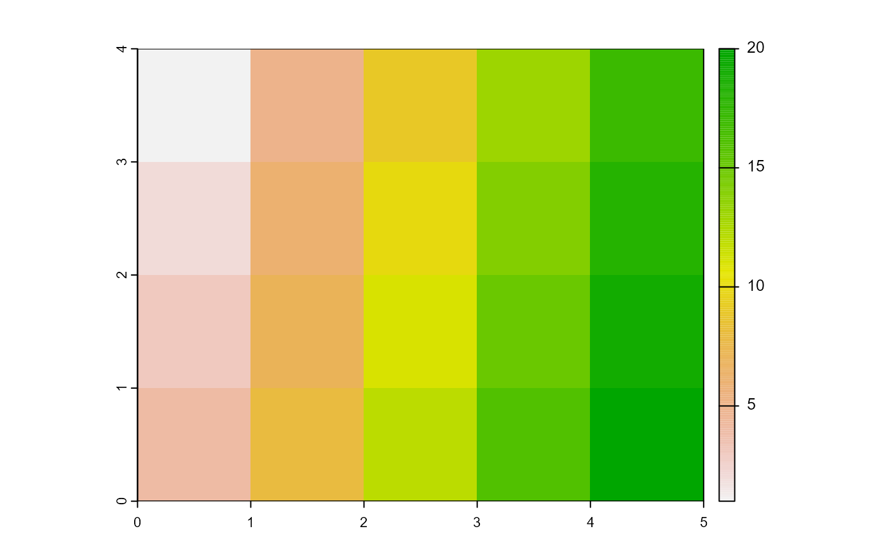

Create and Export mosaics
Arguments
- mosaic
For
mosaic_input(), a file path to the raster to imported, a matrix, array or a list ofSpatRasterobjects.For
mosaic_export(), anSpatRasterobject.
- ...
Additional arguments passed to
terra::rast()(mosaic_input()) orterra::writeRaster()(mosaic_output())- filename
character. The Output filename.
- overwrite
logical. If
TRUE, filename is overwritten.
Details
mosaic_input()is a simply wrapper aroundterra::rast(). It creates aSpatRasterobject from scratch, from a filename, or from another object.mosaic_export()is a simply wrapper aroundterra::writeRaster(). It write aSpatRasterobject to a file.
Examples
library(pliman)
# create an SpatRaster object based on a matrix
x <- matrix(1:20, nrow = 4, ncol = 5)
rast <- mosaic_input(x)
mosaic_view(rast, viewer = "base", axes = TRUE)

# create a temporary filename for the example
f <- file.path(tempdir(), "test.tif")
mosaic_export(rast, f, overwrite=TRUE)
list.files(tempdir())
#> [1] "bslib-d8f79fa3acd9314074b3a3e3b7405d4b"
#> [2] "downlit"
#> [3] "file1eac1591a40"
#> [4] "file1eac5ad85327"
#> [5] "file1eac774f3dd4"
#> [6] "test.tif"